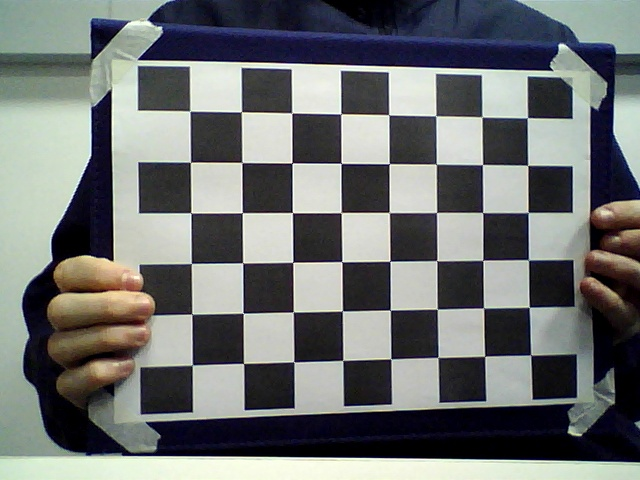
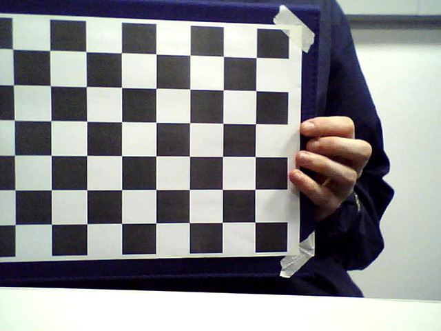

Leonardo Severgnine Maioli - RA: 11201920579
Ricardo Javurek Rihan - RA: 11201920897
Tiago Luiz Silva de Araujo Pereira - RA: 11013316
Laboratório finalizado dia 16 de Julho
Introdução
Este terceiro relatório aborda o conceito de estereoscopia e a construção de uma câmera estéreo caseira utilizando duas webcams. O objetivo principal foi entender a geometria epipolar e calibrar o sistema para obtenção de imagens 3D. O experimento seguiu referências e tutoriais disponíveis online e envolveu tanto a teoria quanto a prática com o OpenCV. Nesta atividade, exploramos também o processo de calibração de câmeras duplas, correção de distorções e geração de vídeos em anaglifo.
Inicialmente, foram estudados os conceitos fundamentais de estereoscopia, especialmente a geometria epipolar e o funcionamento de câmeras estéreo. Utilizamos os materiais de apoio indicados no roteiro, com destaque para os artigos da LearnOpenCV:
Também utilizamos óculos 3D para visualizar as imagens e vídeos gerados durante os testes.
2. Montagem da câmera estéreo
Duas webcams idênticas foram posicionadas paralelamente sobre uma superfície estável, com aproximadamente 5 cm entre seus eixos ópticos. Após o alinhamento, as câmeras foram firmemente fixadas para evitar qualquer movimento relativo durante o experimento. O objetivo era garantir a estabilidade necessária para a calibração correta do sistema estéreo.
3. Calibração do sistema
O primeiro passo foi executar os códigos de exemplo fornecidos no repositório indicado (calibrate.py) utilizando imagens de calibração padrão para entender o processo. Em seguida, capturamos nossas próprias imagens com o padrão de tabuleiro de xadrez, utilizando o script modificado capture_images.py.


Exemplos de fotos de calibração das câmeras
import numpy as np
import cv2
import time
print("Checking the right and left camera IDs:")
# Check for left and right camera IDs
CamL_id = 5
CamR_id = 8
CamL= cv2.VideoCapture(CamL_id)
CamR= cv2.VideoCapture(CamR_id)
for i in range(100):
retL, frameL= CamL.read()
retR, frameR= CamR.read()
cv2.imshow('imgL',frameL)
cv2.imshow('imgR',frameR)
CamR.release()
CamL.release()
CamL= cv2.VideoCapture(CamL_id)
CamR= cv2.VideoCapture(CamR_id)
output_path = "./data/"
start = time.time()
T = 2
count = 0
while True:
timer = T - int(time.time() - start)
retR, frameR= CamR.read()
retL, frameL= CamL.read()
img1_temp = frameL.copy()
cv2.putText(img1_temp,"%r"%timer,(50,50),1,5,(55,0,0),5)
cv2.imshow('imgR',frameR)
cv2.imshow('imgL',img1_temp)
grayR= cv2.cvtColor(frameR,cv2.COLOR_BGR2GRAY)
grayL= cv2.cvtColor(frameL,cv2.COLOR_BGR2GRAY)
# Find the chess board corners
retR, cornersR = cv2.findChessboardCorners(grayR,(8,6),None)
retL, cornersL = cv2.findChessboardCorners(grayL,(8,6),None)
# If corners are detected in left and right image then we save it.
if (retR == True) and (retL == True) and timer <=0:
count+=1
cv2.imwrite(output_path+'stereoR/img%d.png'%count,frameR)
cv2.imwrite(output_path+'stereoL/img%d.png'%count,frameL)
if timer <=0:
start = time.time()
# Press esc to exit
if cv2.waitKey(1) & 0xFF == 27:
print("Closing the cameras!")
break
# Release the Cameras
CamR.release()
CamL.release()
cv2.destroyAllWindows()
Após capturar entre 10 e 15 imagens, realizamos a calibração com o script calibrate.py, obtendo os seguintes parâmetros da câmera estéreo:
Adaptamos o script movie3d.py para permitir a visualização ao vivo em anaglifo do ambiente capturado pelas webcams. Em seguida, modificamos o mesmo código para realizar a gravação do vídeo:
Abaixo segue a versão final do código de gravação adaptado:
import cv2
import numpy as np
# Camera IDs
CamL_id = 0
CamR_id = 2
# Open cameras
CamL = cv2.VideoCapture(CamL_id)
CamR = cv2.VideoCapture(CamR_id)
# Set desired resolution and fps
frame_width = int(CamL.get(cv2.CAP_PROP_FRAME_WIDTH))
frame_height = int(CamL.get(cv2.CAP_PROP_FRAME_HEIGHT))
fps = 30.0
# Define codec and create VideoWriter objects for both cameras
fourcc = cv2.VideoWriter_fourcc(*'XVID')
outL = cv2.VideoWriter('output_left.avi', fourcc, fps, (frame_width, frame_height))
outR = cv2.VideoWriter('output_right.avi', fourcc, fps, (frame_width, frame_height))
# Load stereo maps
print("Reading parameters ......")
cv_file = cv2.FileStorage("data/params_py.xml", cv2.FILE_STORAGE_READ)
Left_Stereo_Map_x = cv_file.getNode("Left_Stereo_Map_x").mat()
Left_Stereo_Map_y = cv_file.getNode("Left_Stereo_Map_y").mat()
Right_Stereo_Map_x = cv_file.getNode("Right_Stereo_Map_x").mat()
Right_Stereo_Map_y = cv_file.getNode("Right_Stereo_Map_y").mat()
cv_file.release()
print("Recording started. Press 'x' to stop.")
def rotate_image(image, angle):
(h, w) = image.shape[:2]
center = (w // 2, h // 2)
M = cv2.getRotationMatrix2D(center, angle, 1.0)
rotated = cv2.warpAffine(image, M, (w, h))
return rotated
while True:
retL, imgL = CamL.read()
retR, imgR = CamR.read()
if not (retL and retR):
print("Error: Couldn't read from both cameras.")
break
Left_nice = cv2.remap(imgL, Left_Stereo_Map_x, Left_Stereo_Map_y, cv2.INTER_LANCZOS4, cv2.BORDER_CONSTANT, 0)
Right_nice = cv2.remap(imgR, Right_Stereo_Map_x, Right_Stereo_Map_y, cv2.INTER_LANCZOS4, cv2.BORDER_CONSTANT, 0)
angle = -5
Left_nice = rotate_image(Left_nice, angle)
Right_nice = rotate_image(Right_nice, angle)
outL.write(Left_nice)
outR.write(Right_nice)
preview = np.hstack((Left_nice, Right_nice))
preview_resized = cv2.resize(preview, (800, 400)) # Resize for display
cv2.imshow("Stereo View (Press 'x' to exit)", preview_resized)
key = cv2.waitKey(1)
if key == ord('x') or key == ord('X'):
print("Recording stopped.")
break
# Release everything
CamL.release()
CamR.release()
outL.release()
outR.release()
cv2.destroyAllWindows()
Análise e Discussão
Durante o experimento, foi possível perceber os desafios da calibração estéreo, como a necessidade de posicionamento preciso das câmeras e estabilidade total do conjunto. A visualização em 3D também foi um desafio, exigindo o uso de ambos os vídeos e a calibração das cámeras. A utilização dos óculos 3d foi essencial para validar os resultados.
A calibração e os parâmetros extraídos permitiram observar como a geometria epipolar e a correspondência de pontos são fundamentais para o sucesso do sistema. Pequenos desalinhamentos entre câmeras geram erros perceptíveis no efeito 3D.
Conclusões
A atividade foi essencial para consolidar os conhecimentos sobre visão estéreo, especialmente no uso do OpenCV para calibração, captura e visualização em 3D. O experimento demonstrou a viabilidade de construir um sistema de câmera estéreo de baixo custo e com resultados satisfatórios. O domínio da calibração e do controle da geometria da câmera é crucial para qualquer aplicação prática em reconstrução 3D.